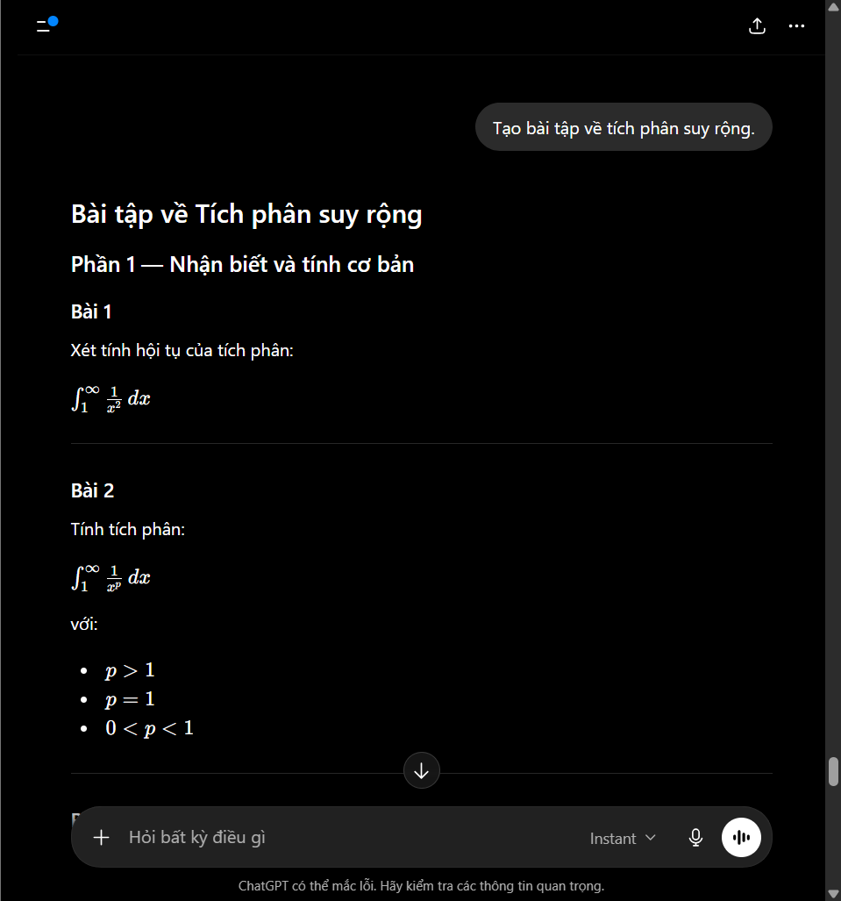
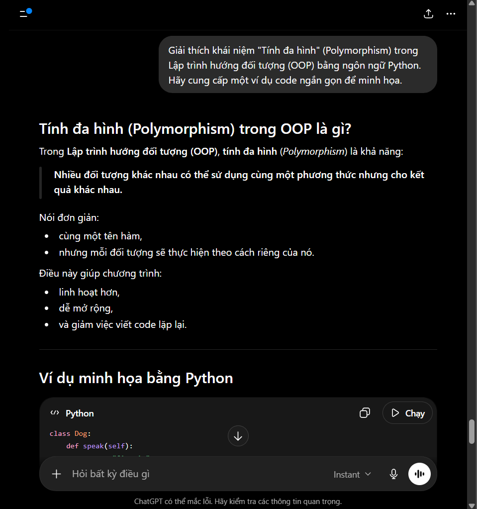
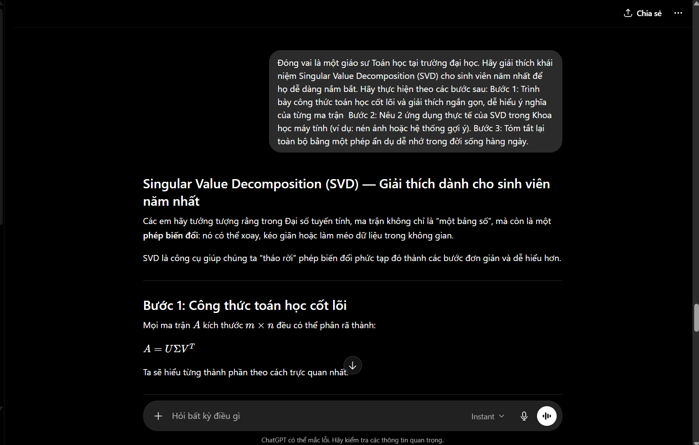
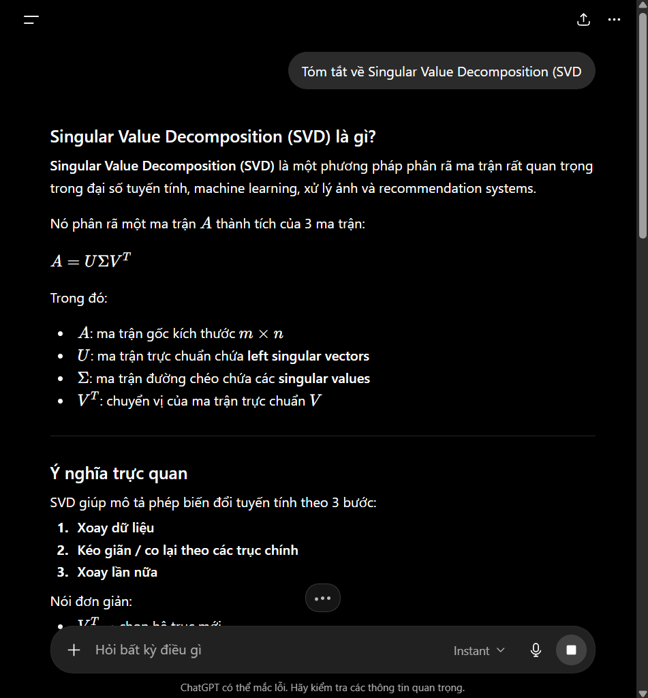
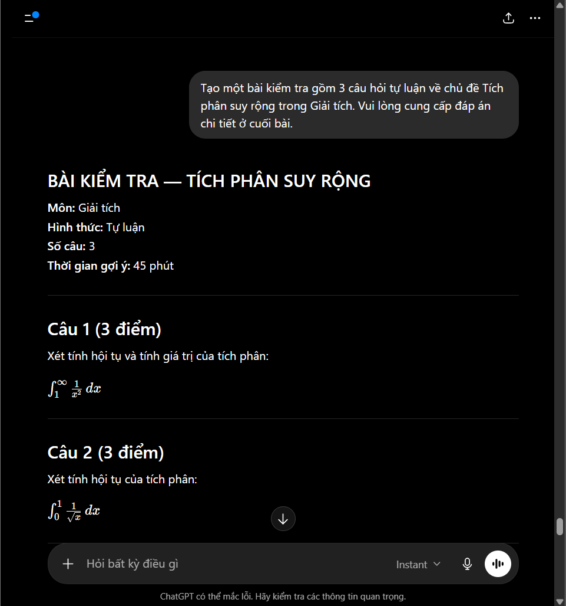
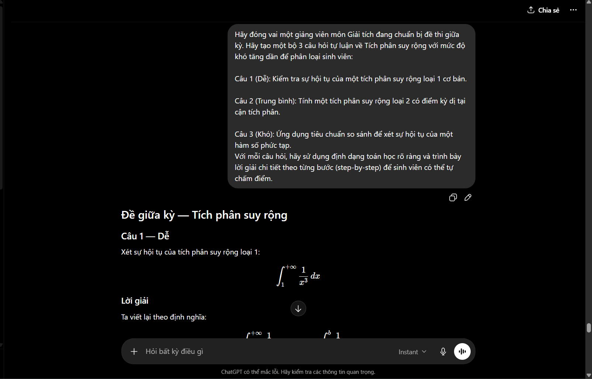

1. Chọn 3 tác vụ học tập phổ biến:
a) - Tóm tắt bài đọc/tài liệu học thuật: Phân tích giá trị suy biến - Singular Value Decomposition
- Prompt cơ bản (đơn giản, ngắn gọn)

- Prompt cải tiến (chi tiết hơn, có cấu trúc)

- Prompt nâng cao (áp dụng các kỹ thuật prompt engineering như role prompting, chain-of-thought, few-shot examples)

So sánh kết quả :
| Tiêu chí | Prompt 1: “Tóm tắt về SVD” | Prompt 2: “Tóm tắt ý chính, 3 phần…” | Prompt 3: “Đóng vai giáo sư…” |
|---|---|---|---|
| Vai trò người trả lời | Không | Không | Có: “giáo sư Toán học” |
| Đối tượng người đọc | Không | Không rõ | Có: “sinh viên năm nhất” |
| Mục tiêu trả lời | Chỉ yêu cầu tóm tắt | Tóm tắt ý chính | Giải thích để người mới dễ hiểu |
| Cấu trúc bài | Không quy định | Có 3 phần rõ ràng | Có 3 bước cụ thể |
| Công thức cần có | Không nói rõ | Có yêu cầu phần công thức | Chỉ rõ công thức A |
| Giải thích từng thành phần | Không yêu cầu | Có thể có nhưng chắc buộc rõ | Bắt buộc giải thích |
| Ứng dụng thực tế | Không yêu cầu cụ thể | Có phần ứng dụng | |
| Ví dụ ứng dụng | Không | Không chỉ rõ số lượng | Gợi ý rõ: nén ảnh, hệ thống gợi ý |
| Phong cách diễn đạt | Không định hướng | Trung tính,học thuật | Dễ hiểu, giảng dạy cho năm nhất |
| Ẩn dụ đời sống | Không | Không | Bắt buộc có ẩn dụ dễ nhớ |
Phân tích cụ thể từng prompt
Prompt 1: “Tóm tắt về Singular Value Decomposition (SVD)”
Prompt này ít chi tiết ở các phần sau:
1. Không nói cần cấu trúc thế nào. AI có thể viết theo bất kỳ kiểu nào: đoạn văn, gạch đầu dòng, bài dài, bài ngắn.
2. Không nói đối tượng người đọc là ai. Nếu người đọc là sinh viên năm nhất thì cần giải thích đơn giản. Nếu là người đã học đại số tuyến tính thì có thể dùng thuật ngữ khó hơn. Prompt 1 không chỉ rõ điều đó.
3. Không nói cần công thức nào. Dù SVD thường có công thức, prompt không bắt buộc AI phải trình bày công thức này.
4. Không yêu cầu ví dụ hay ứng dụng. AI có thể chỉ định nghĩa ngắn gọn mà không nói SVD dùng để làm gì.
=> Vì vậy Prompt 1 chỉ phù hợp khi bạn muốn câu trả lời nhanh, tổng quát.
Prompt 2: “Tóm tắt các ý chính… 3 phần: Định nghĩa, Công thức toán học và Ứng dụng thực tế”
Prompt này chi tiết hơn Prompt 1 ở các phần:
1. Có cấu trúc rõ ràng. Bạn yêu cầu đúng 3 phần:
Định nghĩa
Công thức toán học
Ứng dụng thực tế
Điều này giúp câu trả lời dễ đọc hơn và ít bị thiếu ý.
2. Có định hướng nội dung cần xuất hiện. AI biết chắc phải nói về:
SVD là gì,
công thức liên quan,
dùng vào đâu trong thực tế.
3. Nhưng vẫn chưa chi tiết ở phần đối tượng người học. Prompt không nói bài này dành cho sinh viên năm nhất, học sinh phổ thông hay người đã biết đại số tuyến tính.
4. Chưa quy định số lượng ứng dụng. Bạn chỉ nói “ứng dụng thực tế”, nên AI có thể nêu 2, 3 hoặc 5 ứng dụng.
5. Chưa yêu cầu giải thích từng ma trận. Có phần “công thức toán học”, nhưng không bắt buộc phải giải thích rõ
=> Prompt 2 tốt hơn Prompt 1 vì có bố cục, nhưng vẫn còn khá mở.
Prompt 3: “Đóng vai giáo sư Toán… sinh viên năm nhất… Bước 1, 2, 3…”
Prompt này chi tiết nhất ở các phần:
1. Có vai trò cụ thể. Bạn yêu cầu AI “đóng vai giáo sư Toán học”. Vì vậy câu trả lời sẽ có phong cách giảng dạy, chậm rãi, giải thích rõ.
2. Có đối tượng người nghe cụ thể. “Sinh viên năm nhất” là chi tiết rất quan trọng. Nó khiến AI tránh giải thích quá khó và phải dùng ngôn ngữ dễ hiểu hơn.
3. Có quy trình trả lời theo từng bước. Bạn không chỉ nói “giải thích SVD”, mà chia thành:
Bước 1: công thức và ý nghĩa từng ma trận
Bước 2: 2 ứng dụng thực tế
Bước 3: ẩn dụ đời sống
4. Có yêu cầu cụ thể về công thức. Bạn nêu rõ công thức:
A=UΣVTA = U\Sigma V^TA=UΣVT
Nên AI gần như chắc chắn sẽ dùng đúng công thức này.
5. Có yêu cầu giải thích từng thành phần. Prompt bắt AI phải giải thích từng kí hiệu trong công thứ
Đây là phần Prompt 1 và Prompt 2 chưa làm rõ.
6. Có số lượng ứng dụng cụ thể. Bạn yêu cầu “2 ứng dụng thực tế”, nên câu trả lời sẽ vừa đủ, không quá ít cũng không lan man.
7. Có yêu cầu ẩn dụ. Đây là điểm làm prompt rất mạnh, vì nó ép câu trả lời phải dễ nhớ và gần gũi hơn.
=> Prompt 3 chi tiết nhất vì nó kiểm soát cả vai trò, đối tượng, nội dung, số lượng ví dụ, công thức và phong cách giải thích.
b) Giải thích khái niệm phức tạp Chủ đề: Lập trình Hướng đối tượng
- Prompt cơ bản (đơn giản, ngắn gọn)

- Prompt cải tiến (chi tiết hơn, có cấu trúc)

- Prompt nâng cao (áp dụng các kỹ thuật prompt engineering như role prompting, chain-of-thought, few-shot examples)

| Tiêu chí | Prompt 1: “Giải thích tính đa hình trong lập trình” | Prompt 2: “Giải thích Polymorphism trong OOP Python, có ví dụ code” | Prompt 3: “Đóng vai Python Senior hướng dẫn thực tập sinh…” |
|---|---|---|---|
| Mức độ chi tiết | Thấp | Trung bình | Cao |
| Vai trò người trả lời | Không | Không | Có: lập trình viên Python Senior |
| Đối tượng người đọc | Khong rõ | Người học Python/OOP nói chung | Có: thực tập sinh |
| Chủ đề chính | Tính đa hình nói chung | Polymorphism trong OOP Python | Polymorphism trong OOP Python |
| Phạm vi kiến thức | Rộng,chung chung | Cụ thể hơn :OOP + Python | Rất cụ thể: OOP Python + method overriding |
| Yêu cầu code | Không bắt buộc | Có ví dụ code ngắn gọn | Có code minh họa rõ ràng |
| Yêu cầu kĩ thuật cụ thể | Không có | Chưa chỉ rõ kĩ thuật | Có: method overriding, class cha, 2 class con |
| Yêu cầu giải thích code | Không có | Có thể có nhưng không bắt buộc chi tiết | |
| Khả năng kiểm soát đầu ra | Thấp | Trung bình | Cao |
| Phù hợp để học sâu | Thấp | Khá tốt | Tốt nhất |
Phân tích từng prompt
Prompt 1
“Giải thích tính đa hình trong lập trình”
Ít chi tiết vì:
không nói dùng ngôn ngữ nào,
không nói đang nói về OOP,
không yêu cầu code,
không nói giải thích cho ai.
=> AI sẽ trả lời khá chung chung.
Prompt 2
“Giải thích Polymorphism trong OOP Python bằng ví dụ code”
Chi tiết hơn vì:
xác định rõ Python,
xác định rõ OOP,
yêu cầu ví dụ code.
Nhưng vẫn thiếu:
chuẩn code,
kỹ thuật cụ thể,
giải thích từng dòng.
Prompt 3
“Đóng vai Python Senior hướng dẫn thực tập sinh…”
Chi tiết nhất vì:
có vai trò cụ thể (Senior),
có đối tượng học (intern),
yêu cầu method overriding,
yêu cầu chuẩn PEP 8,
yêu cầu giải thích từng dòng code.
=> AI sẽ cho output sát nhu cầu học tập và chuyên nghiệp hơn nhiều.
- Tạo bộ câu hỏi ôn tập cho chủ đề Chủ đề: Tích phân suy rộng
- Prompt cơ bản (đơn giản, ngắn gọn)

- Prompt cải tiến (chi tiết hơn, có cấu trúc)

- Prompt nâng cao (áp dụng các kỹ thuật prompt engineering như role prompting, chain-of-thought, few-shot examples)

| Tiêu chí | Prompt 1: “Tạo bài tập về tích phân suy rộng” | Prompt 2: “Tạo bài kiểm tra 3 câu có đáp án” | Prompt 3: “Đóng vai giảng viên chuẩn bị đề giữa kỳ…” |
|---|---|---|---|
| Mức độ chi tiết | Thấp | Trung bình | Cao |
| Vai trò người ra đề | Không | Không | Có : giảng viên giải tích |
| Số lượng câu hỏi | Không rõ | Có 3 câu | Có : 3 câu |
| Mức độ khó | Không yêu cầu | Chưa phân mức | Có từ dễ đến khó |
| Dạng bài | Chung chung | Tự luận | Tự luận phân loại |
| Yêu cầu đáp án | Không | Có đáp án chi tiết | Có lời giải chi tiết từng bước |
| Mục tiêu kiểm tra | Không rõ | Kiểm tra kiến thức cơ bản | Phân loại sinh viên |
| Khả năng kiểm soát output | Thấp | Trung bình | Cao |
Phân tích từng prompt
Prompt 1
Ít chi tiết vì:
không nói số lượng bài,
không có mức độ khó,
không yêu cầu đáp án.
=> AI sẽ tạo bài khá ngẫu nhiên.
Prompt 2
Chi tiết hơn vì:
có 3 câu tự luận,
có đáp án chi tiết.
Nhưng vẫn thiếu:
phân loại độ khó,
mục tiêu kiểm tra cụ thể.
Prompt 3
Chi tiết nhất vì:
có vai trò giảng viên,
có mức độ khó tăng dần,
có yêu cầu phân loại sinh viên,
có lời giải từng bước rõ ràng.
=> Cho ra sát đề thi thật hơn nhiều.
. Tổng hợp các nguyên tắc và mẹo viết prompt hiệu quả dựa trên kết quả thử nghiệm.
Nguyên tắc viết prompt hiệu quả rút ra từ cả 3 chủ đề
SVD – Polymorphism – Tích phân suy rộng
Qua 3 lần thử prompt, có thể thấy prompt càng tốt thì càng kiểm soát rõ ai trả lời, trả lời cho ai, trả lời theo cấu trúc nào và cần chi tiết đến đâu.
1. Nêu rõ vai trò của AI
Prompt tốt nên nói AI đang đóng vai gì.
Ví dụ:
“Đóng vai giáo sư Toán học…”
“Đóng vai Python Senior…”
“Đóng vai giảng viên Giải tích…”
Tác dụng: câu trả lời sẽ có đúng phong cách hơn, ví dụ giáo sư thì giải thích học thuật, Python Senior thì chú trọng code chuẩn và thực tế.
2. Xác định rõ người học là ai
Nên nói rõ đối tượng tiếp nhận.
Ví dụ:
sinh viên năm nhất,
thực tập sinh,
sinh viên cần tự chấm điểm.
Tác dụng: AI biết nên giải thích đơn giản hay chuyên sâu, dùng ví dụ dễ hiểu hay thuật ngữ nâng cao.
3. Chia cấu trúc đầu ra rõ ràng
Prompt tốt thường yêu cầu trả lời theo phần hoặc theo bước.
Ví dụ:
“Bước 1, Bước 2, Bước 3”
“Định nghĩa, Công thức, Ứng dụng”
“Câu 1 dễ, Câu 2 trung bình, Câu 3 khó”
Tác dụng: câu trả lời ít bị lan man, dễ đọc và dễ copy vào bài làm/báo cáo.
4. Ghi rõ nội dung bắt buộc phải có
Không nên chỉ nói “giải thích” hoặc “tạo bài tập”, mà nên chỉ rõ cần những gì.
Ví dụ:
Với SVD: phải có công thức
Với OOP: phải có code Python, method overriding, class cha và class con.
Với tích phân: phải có 3 câu, lời giải chi tiết, mức độ khó tăng dần.
Tác dụng: AI ít bỏ sót ý quan trọng.
5. Quy định mức độ chi tiết
Nên nói rõ muốn ngắn hay dài, cơ bản hay chuyên sâu.
Ví dụ:
“Định nghĩa dưới 3 câu”
“Giải thích từng dòng code”
“Trình bày lời giải step-by-step”
Tác dụng: tránh việc câu trả lời quá ngắn, quá dài hoặc không đúng nhu cầu.
6. Chỉ rõ định dạng mong muốn
Nên yêu cầu định dạng cụ thể.
Ví dụ:
bảng so sánh,
bullet points,
code block,
lời giải từng bước,
đề thi có đáp án ở cuối.
Tác dụng: kết quả gọn, dễ nhìn, dễ dùng lại trong Word hoặc bài thuyết trình.
Công thức prompt hiệu quả
Một prompt tốt có thể viết theo công thức:
Vai trò + Đối tượng + Nhiệm vụ + Cấu trúc + Yêu cầu cụ thể